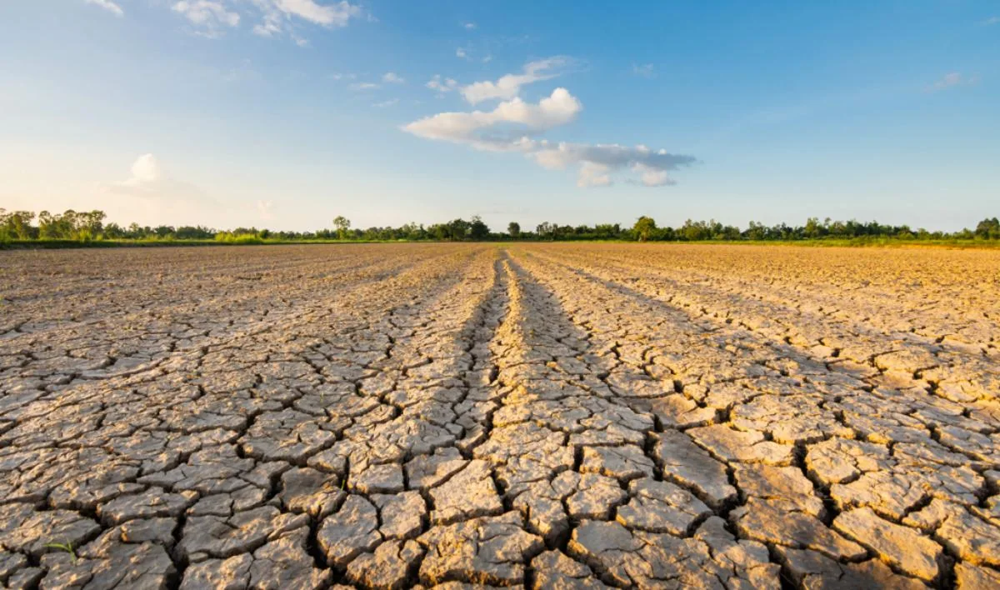

← All research areasHYDROEXLAB / RESEARCH
Drought Monitoring and Forecasting
Emerging Research
Exploring drought conditions, their evolution, and the value of early warning.

Overview
HydroExLab is expanding its research on drought monitoring and forecasting to improve understanding of drought conditions, their evolution, and potential impacts on water resources.